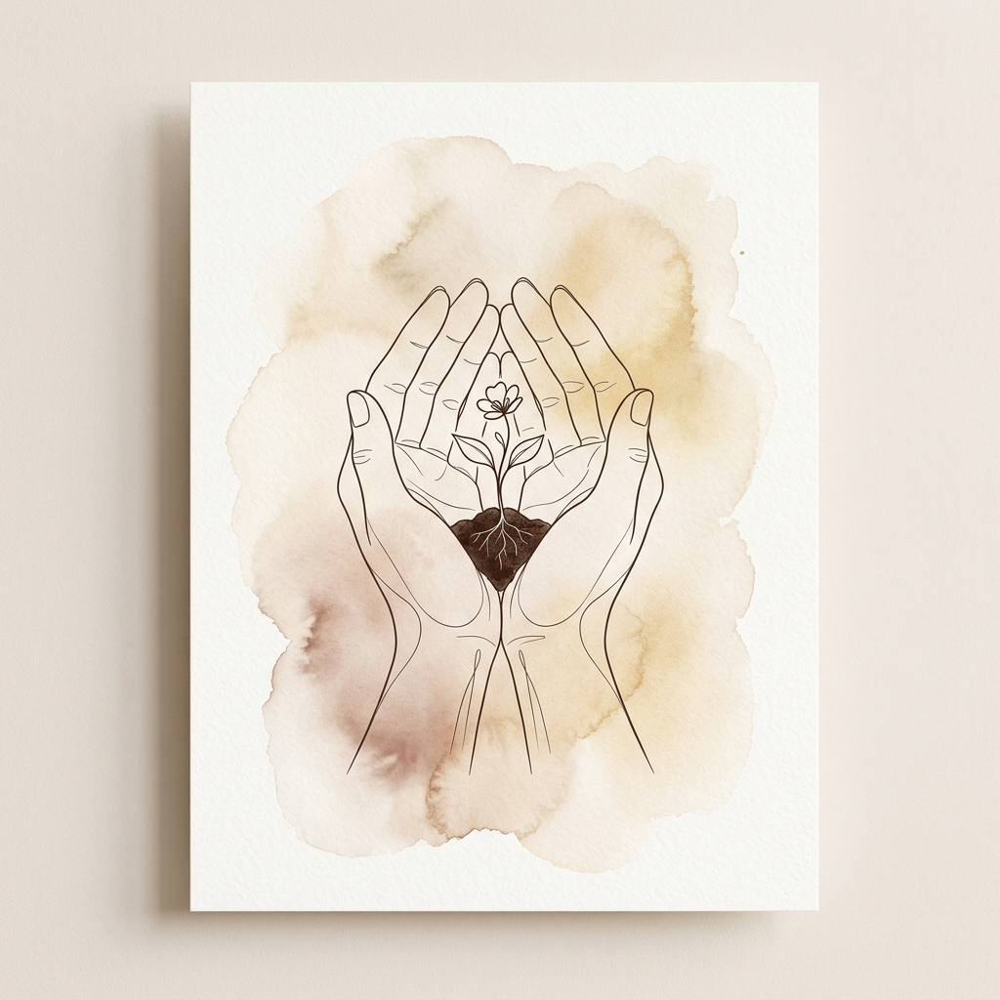

Gratidão
Hoje meu coração transborda de gratidão. Ao acordar aqui no acampamento e ver a luz do sol nascer, a primeira coisa que fiz foi agradecer a Deus por ter colocado você na minha vida. Você é o meu maior presente, a resposta mais bonita das minhas orações sinceras. Obrigado por ser meu porto seguro, por me apoiar e por caminhar comigo sob a luz da fé. Que o seu dia hoje seja repleto de pequenos motivos para sorrir e sentir-se especial.
"Dou graças ao meu Deus todas as vezes que me lembro de vós."
Filipenses 1:3
Uma Oração por Nós
"Pai celestial, muito obrigado por ter cruzado os nossos caminhos. Peço que hoje a minha amada sinta o quanto ela é preciosa e amada por Ti e por mim. Enche o coração dela de gratidão pela vida e por todas as bênçãos. Amém."